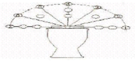
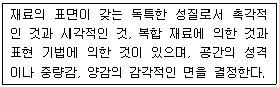

화훼장식기능사 (2009-07-12 기출문제)
1과목: 화훼장식재료
1. 잎 표면의 특색과 특징을 가지고 식물 분류 시 형태에 따른 연결이 바르지 않은 것은?
- 엽선(葉先) - 예두(銳頭)
- 엽저(葉底) - 의저(의底)
- 엽연(葉緣) - 원형(圓形)
- 엽형(葉形) - 타원형(楕圓形)
(정답률: 52%)

2. 밀폐된 유리용기 속에 토양층을 형성하여 식물이 자랄 수 있도록 만든 것은?
- 디쉬가든
- 테라리움
- 토피어리
- 수경재배
(정답률: 97%)
3. 벤자민 고무나무(Ficus benjamina)의 원산지는?
- 칠레
- 브라질
- 아프리카
- 인도
(정답률: 52%)
4. 열매를 보는 장식용 소재로 가장 거리가 먼 것은?
- 피라칸타
- 낙상홍
- 박태기나무
- 호랑가시나무
(정답률: 44%)
5. 흙에 심지 않고 나무나 돌 등에 붙여 재배하는 난의 종류는?
- 반다
- 심비디움
- 춘란
- 한란
(정답률: 71%)
6. 일반적으로 우리나라의 노지 화단에서 튤립의 꽃을 볼 수 있는 시기는?
- 1~2월
- 4~5월
- 7~8월
- 10~11월
(정답률: 88%)
7. 화훼장식에 사용되는 도구에 대한 설명으로 틀린 것은?
- 플로랄 테이프는 쭉 펴서 감아주면 잘 들러붙도록 다양한 색상의 종이에 접착제 성분이 있다.
- 철사는 지름에 따라 번호가 매겨지며, 수가 증가할수록 굵은 철사이다.
- 워터튜브는 절화의 줄기가 짧아 플로랄 폼에 바로 꽂을 수 없을 때 사용한다.
- 글루건은 전기를 이용하여 글루스틱을 녹여 접착제로 이용하는 기구이다.
(정답률: 96%)
8. 유도화라고도 불리은 관상수목으로 내한성(耐寒性)이 약해 우리나라 중부이북의 노지에서는 월동이 어려운 식물은?
- 목련
- 은행나무
- 협죽도
- 산수유
(정답률: 56%)
9. 절화장식에 사용되는 화기로 적절하지 않은 것은?
- 병
- 테라리움 용기
- 수반
- 콤포트
(정답률: 83%)
10. 선인장과(科)에 해당되는 것은?
- 용설란
- 비모란
- 알로에
- 칼랑코에
(정답률: 44%)
11. 덩이줄기(傀莖)에 속하는 화훼는?
- 히아신스
- 크로커스
- 아네모네
- 프리지어
(정답률: 42%)
12. 화훼장식에서 매스 플라워(mass flower)의 뜻과 용도에 대한 설명으로 틀린 것은?
- 길다란 꽃대에 꽃이 하나씩 달려있다.
- 국화, 달리아, 장미, 카네이션이 대표적인 꽃이다.
- 꽃꽂이 전체에서 주로 중심이 되는 부분에 꽂혀진다.
- 작품에서 매스플라워의 큰 꽃들을 주로 바깥쪽에 꽂고 중심으로 갈수록 작은 꽃들을 꽂아야 안정감이 든다.
(정답률: 77%)
13. 절화장식품을 완성한 후 점검해야 할 사항으로 거리가 먼 것은?
- 작품의 견고성 여부를 확인한다.
- 소재의 생리적 특성을 파악한다.
- 수분의 흡수 상태를 파악한다.
- 플로랄 폼이 완전히 가려졌는지 확인한다.
(정답률: 82%)
14. 난에서 줄기가 다육화한 양분저장 기관을 뜻하는 것은?
- 괴근
- 인경
- 구근
- 위구경
(정답률: 45%)
15. 화훼원예에 대한 설명으로 틀린 것은?
- 영어로 floriculture인데 꽃을 의미하는 flori와 재배를 나타내는 culture의 합성어이다.
- 형태 및 목적에 따라 생산화훼, 전시화훼, 취미원예로 구분하다.
- 절화, 분화, 화단묘 등의 화훼를 생산, 유통, 이용, 가공, 판매하는 것이다.
- 이용방향에 따라 과수, 채소로 나뉜다.
(정답률: 94%)
16. 최소한의 소재를 사용하여 소재의 형과 선 그리고 각도를 강조한 방사선 줄기 배열의 꽃꽂이는?
- 형-선적 구성의 꽃꽂이
- 풍경식 디자인의 꽃꽂이
- 비더마이어 디자인의 꽃꽂이
- 구조적 구성의 꽃꽂이
(정답률: 87%)
17. 화훼장식의 디자인 기법 중 비슷한 종류나 색상의 재료를 한 곳에 모아주면서 서로의 길이를 다르게 표현하는 것은?
- 그룹핑
- 스태킹
- 번들링
- 프레밍
(정답률: 74%)
18. 낚시줄 같은 끈으로 꽃을 꿰어 행사 때나 송영식(送迎式)때 목에 걸어주는 것으로 리스와 유사한 형태는
- 팬던트(pandant)
- 레이(lei)
- 리슬렛(wristlet)
- 코사지(corsage)
(정답률: 52%)
19. 핸드타이드 부케 제작 시 주의사항으로 거리가 먼 것은?
- 바인딩 포인트는 단단히 묶는다.
- 줄기의 끝은 예리한 칼로 일자로 자른다.
- 줄기는 나선형 또는 평행형으로 제작한다.
- 바인딩 포인트를 기준으로 아래 부분의 줄기는 깨끗이 다듬어 준다.
(정답률: 86%)
20. 한국전통 꽃꽂이 화형 구성에서 적합하지 않은 것은?
- 1주지는 제일 긴 가지로 작품의 화형을 결정한다.
- 2주지는 중간 길이로 작품의 넓이 부피를 구성한다.
- 3주지는 전체적인 조화를 찾아 흐름을 마무리 해주는 역할을 한다.
- 종지는 주지를 보완해 주는 역할을 하며 주지보다 더 길게 꽂는다.
(정답률: 95%)
2과목: 화훼장식 제작 및 유지관리
21. 절화 수명의 연장을 위한 목표와 해당 처리의 연결이 틀린 것은
- 미생물 증식 억제-8HQC 처리
- 에틸렌가스 억제-구연산처리
- 영양공급-2~5% 설탕처리
- 수분공곱-45℃물속 자르기
(정답률: 58%)
22. 카네이션, 장미와 같이 꽃받기 부위가 발달하여 단단한 꽃 종류에 사용하는 방법으로, 꽃받침 기부에 철사를 관통시켜 구부리는 철사처리 방법은?
- 후크(hook)법
- 인서션(insertion)법
- 헤어핀(hairpin)법
- 피어스(pierce)법
(정답률: 76%)
23. 화훼장식에서 사용되는 용어인 생장점에 대한 설명으로 틀린 것은?
- 무(無)생장점의 디자인도 가능하다.
- 식물의 뿌리와 같은 것으로 근원적인 점이다.
- 식생디자인에서는 복수 생장점의 작품을 만들 수 있다.
- 기하학적 형태에서는 한 점에 모이는 부분을 초점과 구분하여 생장점이라 한다.
(정답률: 55%)
24. 베란다 및 발코니 장식을 위한 계절별 분식물로 부적합한 것은?
- 3~5월의 시네라리아
- 6~8월의 페튜니아
- 9~10월의 프리뮬라
- 10~12월의 꽃양배추
(정답률: 47%)
25. 속이 비었거나 연한 꽃의 자연줄기를 그대로 살리고 싶을 때 철사를 줄기 속에 넣어 제작하는 테크닉은?
- 소잉(sewing)법
- 피어스(pierce)법
- 인서션(insertion)법
- 시큐어링(securing)법
(정답률: 93%)
26. 걸이 화분용 소재로 가장 적당한 것은?
- 안스리움
- 구즈마니아
- 러브체인
- 테이블야자
(정답률: 75%)
27. 부케 홀더를 이용해 부케를 제작했다. 아이비 잎을 이용하여 뒷면을 마감하려고 할 때 아이비 잎에 처리 할 적당한 철사처리 방법은?
- 후크(hook)법
- 피어스(pierce)법
- 트위스트(twist)법
- 헤어핀(hairpin)법
(정답률: 78%)
28. 한국의 결혼식장에서 주로 이용되는 화훼장식으로 가장 거리가 먼 것은?
- 주례단상 장식
- 화관
- 화동의 꽃바구니
- 십자가 장식
(정답률: 96%)
29. 다음 그림의 형태로 작품을 구성할 경우 ①~⑦위치의 외곽선을 표현하기에 가장 적합한 소재는?

- 스프레이 카네이션
- 스프레이 장미
- 리아트리스
- 나리
(정답률: 74%)
30. 절화장식의 분류 중 구성 형식에 의한 분류에서 꽃 소재를 인위적으로 재구성하여 다른 형태로 구성하는 것은?
- 장식적 구성
- 선형적 구성
- 평행적 구성
- 자연적 구성
(정답률: 89%)
31. 한국의 분식물 장식에 대한 역사적인 설명으로 가장 거리가 먼 것은?
- 한국의 전통적인 분식물은 자생 목본식물이 주종을 이룬 분재나 분경이었다.
- 고려 후기에는 소나무를 비롯한 매화나무와 대나무가 주종이 되었다.
- 1970년대 경제발전으로 인한 생활의 여유와 주거양식의 변화로 분식물 장식에 대한 관심이 높아졌다.
- 오늘날 실내공간에서 가장 일반적으로 이용되고 있는 식물은 자생식물이다.
(정답률: 65%)
32. 소재의 바로 뒤와 아래에 똑같은 소재를 하나 더 가깝게 꽂아서 입체적으로 보이게 하는 기법은?
- 파베(pave)
- 필로잉(pillowing)
- 쉐도잉(shadowing)
- 베이징(basing)
(정답률: 77%)
33. 절호를 물에 꽂았을 때 줄기 기부가 잘 갈라지는 종류가 아닌 것은?
- 아마릴리스
- 상사화
- 칼라
- 아이리스
(정답률: 35%)
34. 진주암을 1000℃정도의 고온에서 가열한 무균 인조 토양으로 공극량이 많은 토양은?
- 피트모스
- 질석
- 펄라이트
- 훈탄
(정답률: 92%)
35. 식물체내의 수분의 역할 중 식물 체온조절에 대한 설명으로 가장 적합한 것은?
- 공기습도가 포화되면 엽온은 안정된다.
- 증산작용을 통해 식물체온의 상승을 막는다.
- 세포내의 팽압 유지로 식물의 체온을 유지 시킨다.
- 각종 효소의 활성을 증대시켜 식물 체온이 상승하도록 한다.
(정답률: 62%)
36. 반드시 세워서 저장 및 수송해야 하는 것은?
- 숙근 안개초
- 개나리
- 글라디올러스
- 국화
(정답률: 74%)
37. 분화류 관수방법으로 가장 부적합한 것은?
- 흙의 표면이 약간 말라보일 때 관수한다.
- 화분 바닥으로 충분히 물이 흘러나오도록 관수한다.
- 겨울철 관수시 수돗물을 틀어서 즉시 관수한다.
- 관수 시기는 봄, 가을에는 오전 9~10시에 한번 관수한다.
(정답률: 92%)
38. 식물의 가지의 수를 증가시키는데 기여하는 광의 파장범위는?
- 400~450nm
- 500~600nm
- 600~700nm
- 700이상
(정답률: 60%)
39. 절화의 수명을 연장하기 위한 방법으로 옳은 것은?
- 열대성 절화는 0-4℃의 온도에서 저온 저장한다.
- 절화의 관상 가치를 위해 꽃 냉장고에 과일과 함께 보관한다.
- 보존용액은 pH5정도의 약산성 용액을 사용한다
- 절화 수명연장을 위한 최적습도는 RH 95% 이상이다.
(정답률: 86%)
40. 클러스터링(clustering)에 대한 설명으로 옳은 것은?
- 디자인의 입체적 깊이를 위한 그림자 주기 기법
- 작은 소재들은 색상과 질감이 유사한 것끼리 모아서 사용하는 뭉치기 기법
- 작품의 아랫 부분을 강조하기 위한 계단식 포개기 기법
- 소재를 작은 것에서 큰 것끼리 순차적으로 사용하는 변화주기 기법
(정답률: 80%)
3과목: 화훼장식론
41. 강조하고자 하는 소재에 장식적인 목적으로 라피아, 리본 등을 이용하여 가볍게 묶는 기법은?
- 바인딩(binding)
- 밴딩(banding)
- 번들링(bundling)
- 조닝(zoning)
(정답률: 77%)
42. 건조가공한 장식물과 거리가 먼 것은?
- 포푸리
- 갈란드
- 드라이플라워
- 프레스플라워
(정답률: 64%)
43. 화훼장식에 있어서 절화장식이나 분식물이 환경 개선에 미치는 영향으로 틀린 것은?
- 공기정화
- 습도 유지
- 음이온 발생
- 이산화탄소 발생
(정답률: 87%)
44. 다음은 화훼장식 디자인 요소 중 무엇에 대한 설명 인가?

- 균형
- 질감
- 색상
- 면
(정답률: 87%)
45. 전후좌우 어느 방향에서도 감상할 수 있는 디자인 형태는?
- 피라미드형
- L형
- 역T형
- 직립 기본형
(정답률: 85%)
46. 색의 온도감은 난색, 한색, 중성색으로 나뉘는데, 다음 중 가장 차가운 한색에 속하는 것은?
- 빨강
- 노랑
- 보라
- 파랑
(정답률: 90%)
47. 유럽의 신부용 부케에서 사용된 벼이삭의 의미는?
- 행복
- 다산
- 약속
- 순종
(정답률: 88%)
48. 화훼장식의 디자인 원리에 대한 설명으로 옳게 짝지어진 것은?
- 구성-일치감, 동일성과 관련된 구성 요소들을 배합하여 나타내는 미적본질
- 조화-물리적, 시각적 안정감을 주는 배치에 의해 이루어지는 원리
- 균형-소재들 간의 상대적인 크기의 관계
- 강조-부분적이고 소극적으로 특정 부분을 강하게 표현
(정답률: 42%)
49. 소재를 선택할때 고려하여야 할 사항이 아닌 것은?
- 디자인 형태
- 장식할 공간
- 작가가 선호하는 색상
- 화기와의 조화
(정답률: 91%)
50. 색채가 갖는 감정효과로 거리가 먼 것은?
- 팽창과 수축
- 성글고 조밀함
- 가볍고 무거움
- 따뜻하고 차가움
(정답률: 75%)
51. 바로크시대 화훼장식의 특징에 대한 설명으로 거리가 먼 것은?
- 향기가 있는 꽃다발
- 곡선적이면서 화려함
- 비대칭적인 형태
- 호가스형
(정답률: 58%)
52. 홍만선의 「산림경제」에서 다룬 내용으로 옳은 것은?
- 조선 초기 발간되어 분식물의 감상법과 이용법이 설명되어있다.
- 조선 중기 발간되어 분식물의 종류, 가꾸는 방법, 관리시 주의 사항이 설명되어있다.
- 조선 초기 발간되어 식물에 따른 어울리는 수형, 심는법, 분 놓는 법이 설명되어 있다.
- 조선 후기 발간되어 식물의 재배요령과 분토에 이끼를 생기게 하는 요령이 설명되어 있다.
(정답률: 49%)
53. 화훼장식에 사용되는 소재 중 가장 부드러운 질감에 속하는 것은?
- 아킬레아
- 리아트리스
- 알스트로메리아
- 카네이션
(정답률: 56%)
54. 화훼장식의 디자인 요소인 질감에 대한 설명으로 틀린 것은?
- 거친 질감과 울퉁불퉁하거나 광택이 없는 표면은 형식적이며 우아한 느낌을 준다.
- 고운 질감의 식물은 시각적으로 멀어지는 느낌이 있으므로 가깝게 배치한다.
- 칼라는 카네이션이나 맨드라미와 대조적인 질감의 강조를 표현할 수 있다.
- 무거운 색채의 단단하고 품위 있는 질감으로 화분을 선택하였다면 화분 받침이나 식물도 그와 같은 느낌을 갖는 것으로 선택한다.
(정답률: 64%)
55. 디자인 구성 원리 중 다른 재료들과의 구성을 하는데 있어서 일정한 한 부분에 시선을 집중 시키게 하는 원리는 무엇인가?
- 비례
- 강조
- 대비
- 조화
(정답률: 93%)
56. 변이, 반복, 확산 등으로 표현되는 디자인의 원리는?
- 대비
- 통일
- 리듬
- 비례
(정답률: 86%)
57. 화훼장식의 디자인 요소로 거리가 먼 것은?
- 선(lind)
- 구조(structure)
- 형태(form)
- 색(color)
(정답률: 64%)
58. 두가지 이상의 디자인 요소가 서로 분리하거나 배척하지 않고 각 요소가 통합된 감각적 효과를 발휘 할 때 일어나는 미적원리는?
- 비례
- 균형
- 조화
- 대비
(정답률: 79%)
59. 화훼장식의 대칭 균형(symmetrical balance)에 대한 설명으로 틀린 것은?
- 자연스럽고 비정형적이며 시각적 움직임으로 인한 생동감이 느껴진다.
- 상상에 의한 중앙의 수직축을 기준으로 양쪽요소를 동일하게 배열한다.
- 단조롭거나 인위적인 것처럼 보이기도 한다.
- 편안하고 안정된 느낌과 공식적이고 위엄이 있는 듯이 보인다.
(정답률: 74%)
60. 선에 대한 설명으로 가장 거리가 먼 것은?
- 형태와 구조를 만드는데 기초가 된다.
- 면적은 없지만 방향감을 느낄 수 있다.
- 크기는 없고 위치만 있지만 디자인 요소로서 최소의 존재이다.
- 대상을 표현하는 동시에 독자적인 시각대상이 된다.
(정답률: 67%)